BioWorldR: A Curated Collection of Biodiversity and Species Datasets and Utilities
Source:vignettes/BioWorldR_vignette.Rmd
BioWorldR_vignette.Rmd
library(BioWorldR)
library(ggplot2)
#> Warning: package 'ggplot2' was built under R version 4.4.3
library(dplyr)
#> Warning: package 'dplyr' was built under R version 4.4.1
#>
#> Attaching package: 'dplyr'
#> The following objects are masked from 'package:stats':
#>
#> filter, lag
#> The following objects are masked from 'package:base':
#>
#> intersect, setdiff, setequal, unionIntroduction
The BioWorldR package provides a curated and diverse
collection of datasets focused on biodiversity, species
distributions, and biological measurements. It includes data
covering birds, plants, reptiles, turtles, mammals, bees, marine
organisms, and ecological traits.
The package integrates datasets sourced from public repositories, ecological R packages, and open-access databases, offering standardized access to facilitate research, education, and data analysis in biodiversity, biogeography, ecology, and comparative biology.
These datasets encompass a wide variety of formats and content,
including species occurrence records, trait measurements,
ecological interactions, population dynamics, and conservation-related
information. By centralizing well-documented examples,
BioWorldR simplifies teaching, prototyping,
reproducible workflows, and exploratory analyses in the
biological sciences.
Dataset Suffixes
Each dataset in the BioWorldR package uses a
suffix to denote the type of R object:
_df: A data frame_list: A list_tbl_df: A tibble
Example Datasets
Below are selected example datasets included in the
BioWorldR package:
Reptiles_df: This dataset contains the valid names and url addresses for all reptile species cataloged in The Reptile DatabaseGorillas_df: Chest-beating rates in Gorillas.Brain_animals: Brain weight versus body weight of 28 animals
Data Visualization with BioWorldR Data
Brain weight versus body weight of 28 animals
Brain_animals %>%
# Select only the species and bodyweight columns
select(species, brainweight) %>%
# Create the bar chart
ggplot(aes(x = reorder(species, brainweight), y = brainweight)) +
geom_col(fill = "steelblue") +
coord_flip() + # Flip coordinates for better readability
labs(
title = "Brainweight of Different Animal Species",
x = "Species",
y = "Brainweight "
) +
theme_minimal()
Conclusion
The BioWorldR package provides a curated collection of
biodiversity and species-related datasets, covering a wide range of taxa
including birds, plants, reptiles, turtles, mammals, bees, and
marine organisms. By gathering and standardizing these datasets
from public repositories and ecological R packages, it enables
researchers, educators, and students to easily access well-documented
examples for use in biodiversity, ecology, biogeography, and
comparative biology.
The package supports data exploration, visualization, reproducible workflows, and educational purposes, making it a valuable tool for both teaching and applied research.
For detailed information and full documentation of each dataset, please refer to the reference manual and help files included within the package.